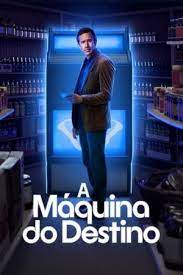

Em Grey 's Anatomy, os médicos do Grey Sloan Memorial Hospital/Seattle Grace Hospital lidam diariamente com casos de vida ou morte.
É um no outro que eles encontram apoio, conforto, amizade e até mesmo amor. Juntos, eles se esforçam para conciliar os dramas profissionais com os pessoais,
descobrindo que ambos podem - e vão - se misturar no meio do caminho. Entre os funcionários do local está Meredith Grey (Ellen Pompeo),
filha de um cirurgião conceituado e recém-chegada ao programa de residência. Ela divide as preocupações do ofício com os internos Cristina Yang (Sandra Oh),
Izzie Stevens (Katherine Heigl), Alex Karev (Justin Chambers) e George O'Malley (T. R. Knight). Todos passam pela supervisão de três renomados doutores: Miranda Bailey
(Chandra Wilson), uma residente sênior que trabalha para ajudar Derek Shepherd (Patrick Dempsey), chefe de neurocirurgia e interesse amoroso de Grey; Preston Burke
(Isaiah Washington), chefe do departamento de cardio e futuro noivo de Yang; e Richard Webber (James Pickens Jr.), chefe de cirurgia e cirurgião geral adjunto.
Cada um deles luta para sobreviver em meio a longos expedientes e agitados treinamentos, dando o melhor de si nessa carreira tão importante quanto difícil.

A história de The Blacklist começa quando Raymond Reddington (Spader), o criminoso foragido mais procurado pelo FBI,
decide se entregar às autoridades por vontade própria. Após a captura, ele revela que outro bandido acabou de desembarcar
no país. Com a condição de que a agente Elizabeth Keen (Boone) seja a intermediária da operação, ele promete ajudar o FBI a prendê-lo.
O pedido é atendido pelas autoridades e Reddington revela o plano traçado pelo criminoso para sequestrar a filha de um poderoso militar americano.
Além deste primeiro caso, Reddington também oferece uma colaboração a longo prazo com o FBI em troca de um pacote severo de imunidade. Segundo ele,
ao longo de vinte anos ele cultivou uma lista, apelidada por ele mesmo de blacklist (lista negra), com nomes de políticos, mafiosos, hackers e espiões
que ele pode ajudar a entregar. Começa assim uma colaboração duradoura entre ele, Elizabeth Keen e o FBI, focada em caçar os verdadeiros chefões do crime.

Baseado no livro “The Big Door Prize” de M.O. Walsh, “A Máquina do Destino” conta a história de
uma pequena cidade que é transformada para sempre quando uma máquina misteriosa aparece prometendo revelar o verdadeiro potencial de todos.